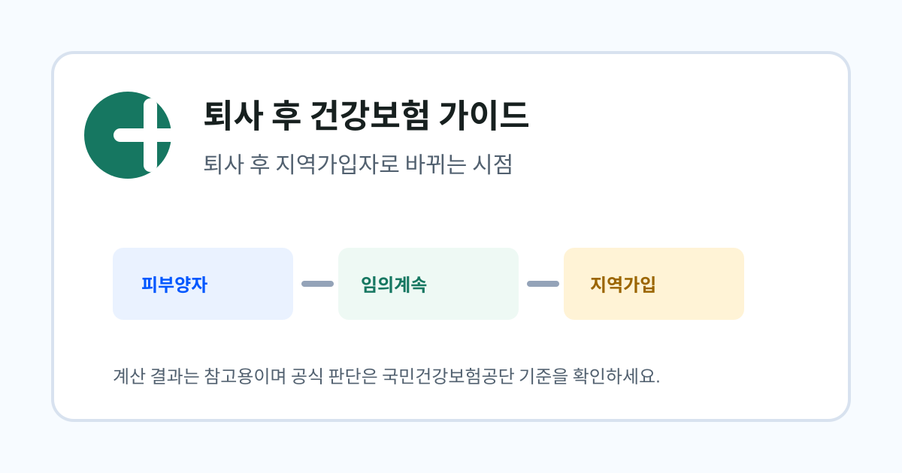

퇴사 후 건강보험 가이드
퇴사 후 재취업하면 건강보험은 어떻게 바뀔까요?
퇴사 후 잠시 지역가입자나 피부양자 상태였다가 재취업하면 건강보험 자격은 다시 직장가입자 중심으로 바뀔 수 있습니다. 이때 기존 고지서와 신청 상태를 함께 확인해야 합니다.

- 재취업하면 새 직장의 직장가입자 취득 신고가 건강보험 자격 변화의 핵심입니다.
- 지역보험료 고지서가 이미 나왔다면 고지 기간과 자격 취득일이 겹치는지 확인해야 합니다.
- 임의계속가입 중 재취업하거나 피부양자 상태에서 취업하는 경우에는 자격 변경 시점을 공단에서 최종 확인하는 것이 안전합니다.
정보 이용 전 확인하세요
이 글은 퇴사자가 건강보험 선택지를 이해할 수 있도록 국민건강보험공단, 정부24, 국가법령정보센터 등 공개 안내를 바탕으로 정리한 민간 참고 자료입니다. 실제 고지액, 자격 취득일, 신청 가능 여부는 개인별 자료 반영 시점과 공단 심사 결과에 따라 달라질 수 있습니다.
재취업 후 가장 먼저 볼 것은 자격 취득일입니다
퇴사자는 퇴사 다음 날부터 바로 한 가지 상태로 고정되는 것이 아니라, 가족 피부양자 등록 가능성, 임의계속가입 신청, 지역가입자 전환 여부에 따라 여러 경로를 지나갈 수 있습니다. 이후 새 직장에 들어가면 사용자의 직장가입자 취득 신고를 기준으로 건강보험 자격이 다시 바뀔 수 있습니다.
따라서 재취업이 정해졌다면 첫 출근일만 보지 말고 건강보험 자격 취득일, 기존 지역보험료 고지 기간, 이미 신청한 임의계속가입 또는 피부양자 신고 상태를 함께 확인해야 합니다. 자격일과 고지월이 맞물리면 중복처럼 보이는 고지서가 나올 수 있기 때문입니다.
지역가입자 고지서가 이미 나온 경우
퇴사 후 지역가입자로 전환되어 고지서를 받은 뒤 재취업했다면, 해당 고지서가 어느 기간의 보험료인지 확인해야 합니다. 국민건강보험공단 안내에 따르면 지역가입자 보험료는 자격 취득일이 속하는 달의 다음 달부터 부과되는 방식이 기본이지만, 개인의 자격 변동일에 따라 실제 고지 흐름은 달라질 수 있습니다.
고지서가 재취업 후에도 계속 나온다면 새 직장의 취득 신고가 반영되기 전인지, 이전 기간에 대한 보험료인지, 정산이나 조정 대상인지 구분해야 합니다. 단순히 “취업했으니 안 내도 된다”고 판단하기보다 고지서의 부과월과 자격 취득일을 비교하는 것이 안전합니다.
- 고지서의 부과월 확인
- 새 직장의 건강보험 취득일 확인
- 이미 납부한 보험료가 있다면 정산 가능 여부 확인
- 고지서가 계속 오면 공단에 자격 반영 상태 문의
임의계속가입 중 재취업한 경우
임의계속가입은 퇴직 후 보험료 부담을 줄이기 위한 제도입니다. 다만 재취업으로 직장가입자 자격을 새로 취득하면 기존 임의계속가입 상태와 새 직장 자격이 어떻게 정리되는지 확인해야 합니다.
특히 짧게 재취업했다가 다시 퇴사하는 경우에는 다음 임의계속가입 가능성이나 지역가입자 전환 시점이 달라질 수 있습니다. 이 부분은 근무 기간과 직장가입자 자격 유지 기간이 연결되므로, 새 직장 입사와 퇴사 이력이 있다면 공단 상담 때 날짜를 정확히 준비하는 것이 좋습니다.
피부양자 상태에서 취업하는 경우
가족의 직장가입자 밑으로 피부양자 등록이 되어 있다가 본인이 취업하면, 본인의 직장가입자 자격 취득으로 피부양자 상태가 정리될 수 있습니다. 이때 가족의 건강보험료가 바로 올라가는 구조는 아니지만, 본인의 급여에서 건강보험료가 공제되기 시작합니다.
취업이 확정되면 급여명세서에서 건강보험료와 장기요양보험료 항목이 언제부터 반영되는지 확인하고, 이전 피부양자 자격 상실 처리와 겹치는 기간이 없는지 살펴보세요.
계산기로 연결하기
퇴사 전 보험료, 퇴사 후 소득, 재산, 전월세 자료를 함께 넣으면 지역가입자, 임의계속가입, 피부양자 가능성을 한 화면에서 비교할 수 있습니다.
퇴사 후 건강보험료 계산하기공식 확인 경로
작성: 건보계산기 편집팀 · 최종 검토: 2026-06-15